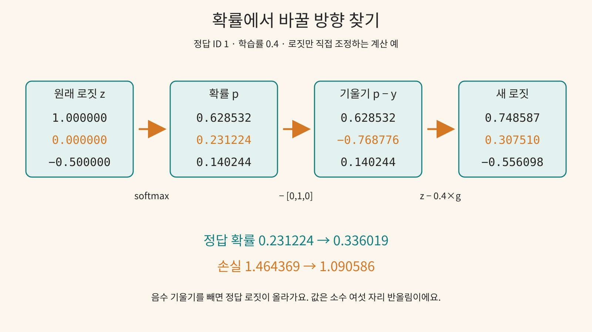

확률에서 바꿀 방향 찾기
앞 수업의 로짓 → 소프트맥스 → 손실을 복습하고, 로짓을 한 번 직접 바꿔 봐요. 신경망 가중치나 임베딩의 역전파는 아직 구현하지 않아요.
용어부터 연결하기
로짓 z는 확률로 바꾸기 전의 점수예요. 확률 벡터 p에서 정답 칸만 고른 값이 타깃 확률이에요. y는 정답 칸만 1인 원핫 벡터예요.
손실 L=−ln(p_target)의 ln은 자연로그예요. 정답 확률이 1이면 손실 0, 작아질수록 손실은 커져요. 이번 손실을 로짓에 대해 미분하면 g=p−y예요. 미분식 유도는 이번 범위 밖이고, 유한 차분으로 결과를 검산해요.
그래디언트는 로짓 한 칸을 조금 바꿨을 때 손실이 얼마나, 어느 방향으로 변하는지 나타내는 국소 기울기예요. 학습률 η는 이동 크기예요. z_new=z−η×g로 기울기 반대 방향으로 움직여요. 이 실습에서 0은 변화 없음의 경계 사례예요.
입력 → 예측 → 결과 확인
업데이트 뒤 정답 칸의 로짓은 어떻게 될까요?
먼저 예측을 선택해 주세요.
동일한 예제의 계산
초기 로짓 [1, 0, −0.5], 타깃 ID 1, 학습률 0.4에서 정답 확률은 약 0.231224 → 0.336019, 손실은 약 1.464369 → 1.090586이에요. 화면은 소수 여섯 자리로 반올림하고 내부에서는 배정밀도 숫자로 계산해요.
학습률 20에서는 이 로짓 직접 최적화 한 걸음의 타깃 확률이 거의 1이에요. 이 예가 큰 학습률의 발산을 보여 주지는 않아요. 전체 신경망의 반복 학습에 대한 보장도 아니에요. 손실은 log-sum-exp 형태로 계산해 확률이 숫자 표현 범위에서 0으로 내려가는 경우도 다뤄요.
유한하지 않은 숫자, 빈 입력, 범위를 벗어난 타깃, 음수 학습률은 거부해요. 극단적으로 큰 수로 업데이트나 손실이 유한 범위를 벗어나도 오류를 표시해요.

전이 문제
학습률을 0으로 바꾸고 예측해 보세요. 결과를 보기 전 새 로짓이 바뀌는지 설명할 수 있나요?
계산 이유
0 곱하기 기울기는 0이므로 세 칸 모두 그대로예요. 기본 예에서는 양수 학습률로 음수 기울기를 빼서 정답 칸의 로짓이 올라가요.